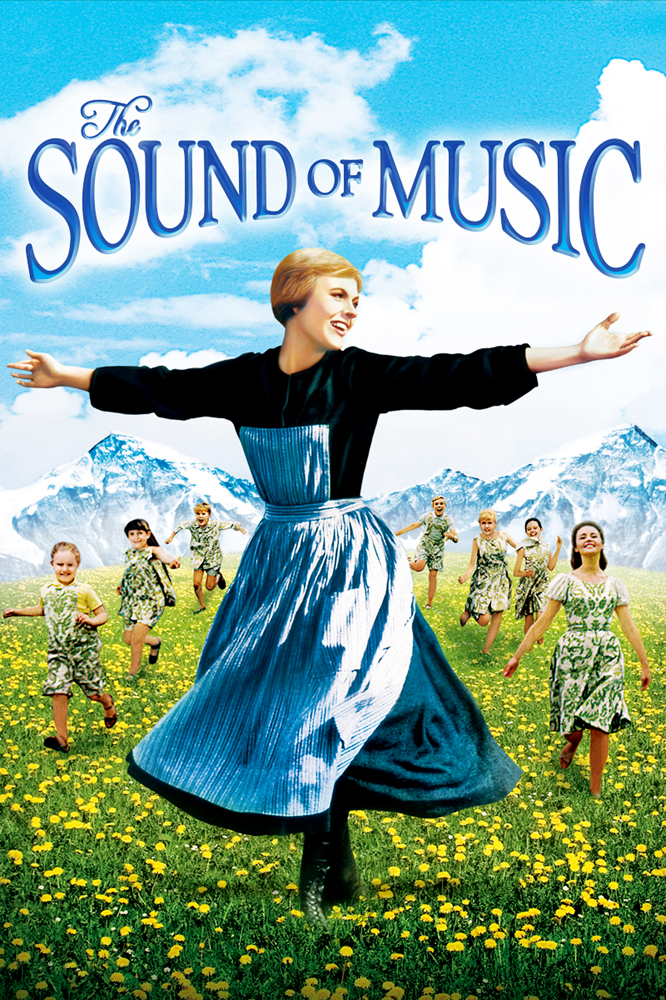
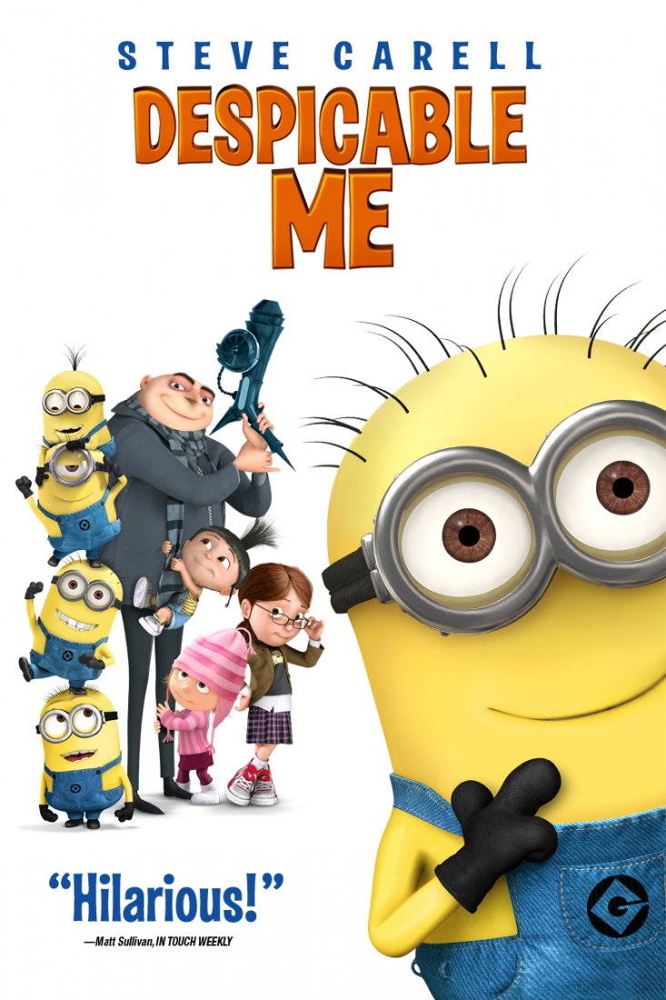

Velina Cai
Student @Le Wagon
About Me
I am a qualified accountant who always work in finance. I moved from Melbourne, Australia to London two years ago. My 2018 new year resolution is to learn something new and to use my creativity other than to 'cook the books', so I am currently taking intensive course at Le Wagon :). I love travelling, taking pictures of beautiful places and watching good movies.
My Favourite Movies

|
Lord of The RingsA meek Hobbit from the Shire and eight companions set out on a journey to destroy the powerful One Ring and save Middle-earth from the Dark Lord Sauron. |
|  |
Sound of MusicA tuneful, heartwarming story, it is based on the real life story of the Von Trapp Family singers, one of the world's best-known concert groups in the era immediately preceding World War II. |
|  |
Despicable MeA man who delights in all things wicked, supervillain Gru hatches a plan to steal the moon. Surrounded by an army of little yellow minions, Gru makes ready to vanquish all who stand in his way. |
Connect with Me